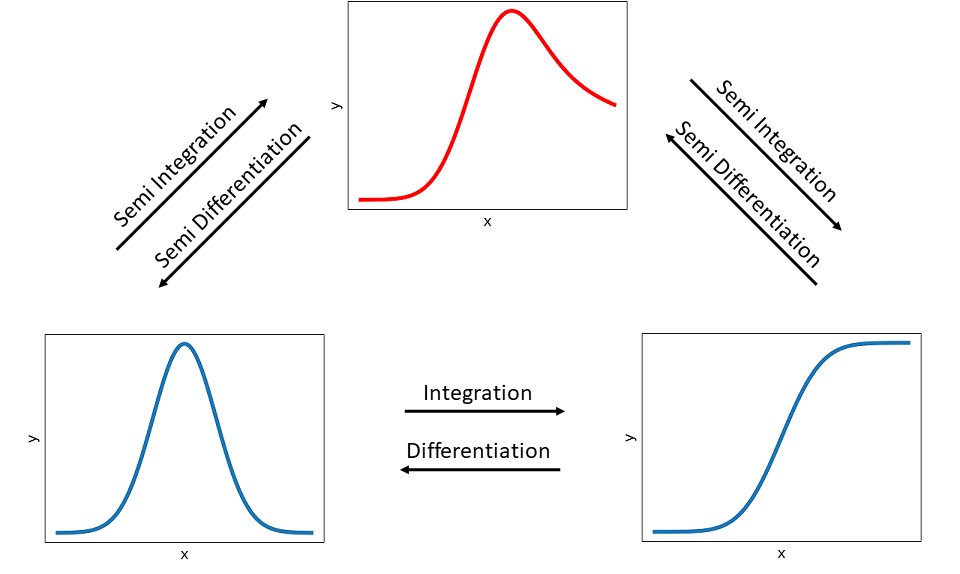

Semi Integration and Differentiation
The following introduction of the fundamentals is (partly) taken from Oldham’s good explanations in [1].
Fundamentals
The differentiation and the integration are common mathematical operations. The differentiation of an arbitrary function is often expressed by \(\frac{d}{dt} f(x)\). Interestingly, the integration can also be expressed in a similar way:
\(\frac{d^{-1}}{dt^{-1}} f(x)= \int_0^t f(\tau) d\tau\)
Therefore, these operations can be displayed in a more general way by:
\(\frac{d^{v}}{dt^{v}} f(x) = \int_0^t f(\tau) d\tau\)
With:
\(v= 1\): Differentiation
\(v=-1\): Integration
Let’s now introduce the so-called semi-operators. For \(v=1/2\) we have the seimi differentiation and (more interestingly for us) with \(v=-1/2\) the seimi integration. The following picture visualize the idea of the semi integration and the semi differentiation.
{kind=link}
The figure shows, that a semi integration of a peak function (bottom left) results in a hybrid function (top) and by performing another semi integration it brings a wave function (bottom right), which is equal to perform a “full” integration of the peak function. The opposide direction is similar, expect that a semi differentiation, respectively a “full” differentiation is performed instead.
Semi Integration Methods
Now we introduce some methods to apply the semi integration, resp. differentiation. These computations needs generally discrete values, i.e. the function graph (like above) has to be seperated into discrete finite values:
\(f(0), f(\delta), ..., f((N-1)\delta), f(N\delta)\)
Here we assume that the step size \(\delta\) is equidistant, meaning for a fixed set of x-Values N:
\(\delta = \frac{x_N}{N}\)
The following algorithms (Gruenwald and Riemann & Liouville) are taken from Oldham in [1] and the fast Riemann from Pajkossy et. al. in [2].
Gruenwald Algorithms
One sort of semi integration was introduced by Gruenwald [3] and Oldham shows in his web ressource 1244 from [1] how this type of semi integration can be applied as an algorithm called G1 algorithm.
It can be generally expressed by taking the sum of the discrete function values multiplied with weights \(w_i\) and then divided by the stepsize:
\(\frac{d^{\pm 0.5}}{dt^{\pm 0.5}} f(t) =\frac{1}{\delta^{\pm 0.5}} \sum_{n=0}^{N-1} w_n f(n\delta)\)
The G1 algorithms is ideal for voltammograms like linear-scan or cyclic versions, where the early signals are small. Note, that these algorithms are less suitable for step and pulse varieties, in which the initial currents are large [1].
The weight can be expressed on different ways, often the single weights \(w_i\) depends on their predecessor \(w_{i-1}\). As the factorial expression could lead to an overflow, this algorithm can be simplified.
The Gruenwald G1 semi integration algorithm is defined as follows:
\(\frac{d^{- 0.5}}{dt^{- 0.5}} f(t) \approx \sqrt{\delta} \sum_{n=1}^{N} w_{N-n} f(n\delta)\)
Which can be also displayed in reverse summation to allow an implementation:
\(\frac{d^{- 0.5}}{dt^{- 0.5}} f(t) \approx \sqrt{\delta} \sum_{n=N}^{1} w_{N-n} f(n\delta)\)
With:
\(w_0 = 1\)
\(w_n = \frac{(n-0.5)w_{n-1}}{n} = (1-\frac{0.5}{n})w_{n-1}\)
The previous definition can also be applied as Gruenwald G1 semi differentiation algorithm with some changes:
\(\frac{d^{0.5}}{dt^{0.5}} f(t) \approx \frac{1}{\sqrt{\delta}} \sum_{n=0}^{N-1} w_{N-n} f(n\delta)\)
With:
\(w_0 = 1\)
\(w_n = \frac{(n-1.5)w_{n-1}}{n}\)
Riemann and Liouville Algorithms
Another sort to determine the semi integral was introduced by Riemann and Liouville [4] and described by Oldham in [1] as R1 algorithm in his web ressource 1244. These sort of algorithms are mainly straightforward general-purpose algorithms.
The algorithm (from Web1242) for the R1 semi integration is:
\(\frac{d^{-1/2}}{dt^{-1/2}}f(t)=\)
\(\frac{4}{3} \sqrt{\frac{\delta}{\pi}} \left[ f(N\delta) + \left\{ \frac{3}{2}\sqrt{N} - N^{3/2} + (N-1)^{3/2} \right\}f(0) + \right.\) \(\left.\sum_{n=1}^{N-1} \left\{ (N-n+1)^{3/2} - 2 (N-n)^{3/2} + (N-n-1)^{3/2} \right\}f(n\delta) \right]\)
The R1 algorithms are not usable for application to currents that arise from potential steps or leaps [1], as:
1. The large current at t=0, immediately following the step is impossible to measure accurately and even if it would be possible,it is likely to be largely composed of a chemically uninteresting nonfaradaic component. But the algorithm still require a value of f(0).
2. The algorithm is based on the assumption that f(t) can be treated as an assemblage of linear segments, whereas faradaic currents arising from a potential step and are decidedly nonlinear with time.
The general definition for the R1 semi differentiation is defined by:
\(\frac{d^{1/2}}{dt^{1/2}}f(t)=\)
\(\frac{2}{\sqrt{\pi\delta}} \left[ f(N\delta) + \left\{ \frac{1}{2\sqrt{N}} - \sqrt{N} + \sqrt{N-1}\right\}f(0) +\right.\) \(\left. \sum_{n=1}^{N-1} \left\{ \sqrt{N-n+1} - 2 \sqrt{N-n} + \sqrt{N-n-1} \right\}f(n\delta) \right]\)
The general definition for the R1 semi differentiation is defined by:
\(\frac{d^{1/2}}{dt^{1/2}}f(t)=\) \(\frac{2}{\sqrt{\pi\delta}} \left[ f(N\delta) + \left\{ \frac{1}{2\sqrt{N}} - \sqrt{N} + \sqrt{N-1}\right\}f(0) +\right.\) \(\left.\sum_{n=1}^{N-1} \left\{ \sqrt{N-n+1} - 2 \sqrt{N-n} + \sqrt{N-n-1} \right\}f(n\delta) \right]\)
Fast Riemann
The following algorithm was introduced by Pajkossy et al. in 1984 [2] and is based on the Riemann-Liouville transformation (RLT). Its big advantage is, that the computation time increases only linearly with the number of points (N). Here it is necessary to define some input variables (beside the t & I(t) data), where q is equal to v, describing a semi integration or semi differentiation. \(\Delta_t\) defines the constant time intervall (i.e. \(t_2 - t_1\)) and \(c_1, c_2\) are constant values, which we set by default to \(c_1=8, c_2=2\) (but still changeable). With these variables, the procedure of the algorithm can be described as pseudo code:
Input \(q, N, \Delta_t, c_1, c_2, I\)
\(t_0 = \Delta_t N^{1/2}\)
\(a_0 = \sin(\pi q)/(\pi qt_0^q)\)
For \(i = 0,2c_1c_2\)
\(j = i-c_1c_2\)
\(a_j = (a_0/c_2)\exp(j/c_2)\)
\(t_j = t_0 \exp(-j/qc_2)\)
\(w_1(i) = t_j / (\Delta_t + t_j)\)
\(w_2(i) = a_j(1-w_1(i))\)
\(s(i) = 0\)
For \(k=1,N\)
\(R(k)=0\)
For \(i=0,2c_1c_2\)
\(s(i)= s(i)w_1(i) + I(k)w_2(i)\)
\(R(k) = R(k) + s(i)\)
Here, \(R\) represents the calculated semi integral, i.e. \(R \approx \frac{d^{v}}{dt^{v}} I(t)\).
Call Algorithms
To perform a semi integration (v =-0.5) or semi differentiation (v =0.5)
on given data (y and t ) with speed up by transonic (with numba or pythran backend) or without simply using python
different methods are implemented.
Available algorithms (alg ):
frlt: Fast Test Riemann-Liouville transformation
g1: Gruenwald
r1: Riemann and Liouville
Available settings (transonic_backend ):
python: Python implementation
numba: Numba package with jit(just in time)
pythran: Transonic package with numba backend
The generalized semi_integration function can be imported and executed by:
from ec_tools.semi_integration import semi_integration
semi_integration(I, t, alg, transonic_backend)
Here, the implemented algorithms can be selected by the alg flag (see above) or
the algorithms can be imported and executed individually (listed below).
Since the semi-integration can be more or less computationally intensive the possibility to speed up the computation by relying on the nice transonic library has been build in.
Gruenwald Algorithm
Implementation of the Gruenwald algorithm for
semi-integration (v =-0.5) and semi-differentiation (v =0.5)
based on Oldham: [1]
EXAMPLES:
Simple examples to compare the alg by a “double” semi-integration (i.e. resulting in a normal integration) with a numerical full integration from scipy. First one with linear graph for y:
>>> from scipy.integrate import cumulative_trapezoid
>>> x = np.linspace(0,1000, 1001)
>>> delta_x = x[1] - x[0]
>>> y = np.array([1]*1001)
>>> np.allclose(gruenwald(gruenwald(y,delta_x),delta_x)[:-1], cumulative_trapezoid(y,x), rtol=1e-15)
True
Second test with more application-related values from a gaussian distribution function (from scipy):
>>> from scipy.stats import norm
>>> from scipy.integrate import cumulative_trapezoid
>>> x = np.linspace(0, 8, 1001)
>>> delta_x = x[1] - x[0]
>>> y = norm.pdf(x,4,1)
>>> np.allclose(gruenwald(gruenwald(y,delta_x),delta_x)[:-1], cumulative_trapezoid(y,x), rtol=1e-1)
True
Import the Gruenwald function directly by:
from ec_tools.semi_integration import gruenwald
res = gruenwald(I, delta_t, v)
Riemann Algorithm
Implementation of the Riemann algorithm for
semi-integration (v =-0.5) and semi-differentiation (v =0.5)
based on Oldham: [1]
EXAMPLES:
Simple examples to compare the alg by a “double” semi-integration (i.e. resulting in a normal integration) with a numerical full integration from scipy. First one with linear graph for y:
>>> from scipy.integrate import cumulative_trapezoid
>>> x = np.linspace(0,1000, 1001)
>>> delta_x = x[1] - x[0]
>>> y = np.array([1]*1001)
>>> np.allclose(riemann(riemann(y,delta_x),delta_x)[:-1], cumulative_trapezoid(y,x), rtol=1e-0)
True
Second test with more application-related values from a gaussian distribution function (from scipy):
>>> from scipy.stats import norm
>>> from scipy.integrate import cumulative_trapezoid
>>> x = np.linspace(0, 8, 1001)
>>> delta_x = x[1] - x[0]
>>> y = norm.pdf(x,4,1)
>>> np.allclose(riemann(riemann(y,delta_x),delta_x)[:-1], cumulative_trapezoid(y,x), rtol=1e-0)
True
Import the Riemann function directly by:
from ec_tools.semi_integration import riemann
res = riemann(I, delta_t, v)
Fast Riemann Algorithm
Implementation of the fast Riemann algorithm for semi-integration. based on Pajkossy et al [2]
Return the semiintegral R of order q for y with the x interval delta_x and the filter constants c1 and c2.
Semi-integrating two times with order q = -0.5 should give the same result as integrating once. The relative error should not exceed 0.25 percent for 1000 and 0.5 percent per 10000 integration steps.
EXAMPLES:
>>> from scipy.integrate import cumulative_trapezoid
>>> x = np.linspace(0,1000, 1001)
>>> delta_x = x[1] - x[0]
>>> y = np.array([1]*1001)
>>> np.allclose(fast_riemann(fast_riemann(y, delta_x=delta_x), delta_x=delta_x), cumulative_trapezoid(y,x,initial=0), rtol=2.5e-03)
True
>>> x = np.linspace(0,1000, 10001)
>>> delta_x = x[1] - x[0]
>>> y = np.array([1]*10001)
>>> np.allclose(fast_riemann(fast_riemann(y, delta_x=delta_x), delta_x=delta_x), cumulative_trapezoid(y,x,initial=0), rtol=5e-03)
True
Import the Fast Riemann function directly by:
from ec_tools.semi_integration import fast_riemann
res = fast_riemann(I, delta_t, v)
Performance Test
TBA
References
[1] K.B. Oldham, Electrochemical Science and Technology, John Wiley & Sons Ltd, 2012
[2] T. Pajkossy, L. Nyikos, Fast algorithm for differintegration, J. Electroanal. Chem. 179, 1984
[3] Gruenwald, A.K. Uber, “begrenzte” Derivationen und deren Anwendungen der Integration und Differentiation. In Z. Angew. Math. und Phys. 1867, 12, 441-480
[4] Riemann, B. et al. in Versuch einer allgemeinen Auffassung der Integration und Differentiation, Gesammelte Werke, published posthumously, Teubner, Leipzig, 1892, pp. 353-366